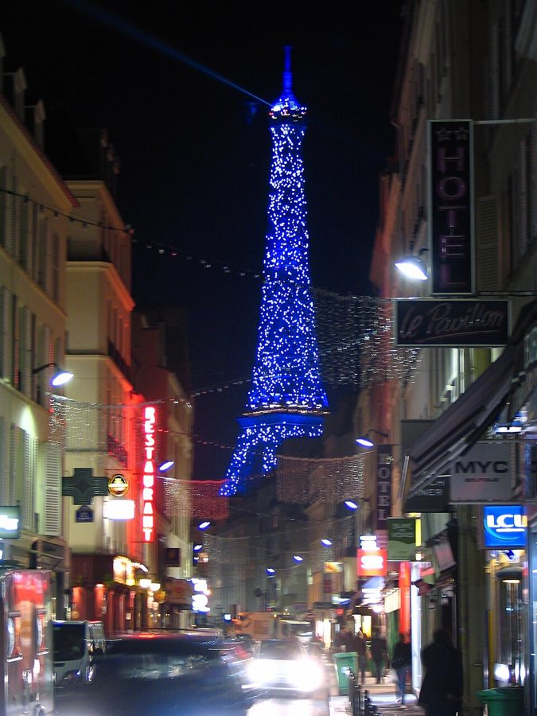
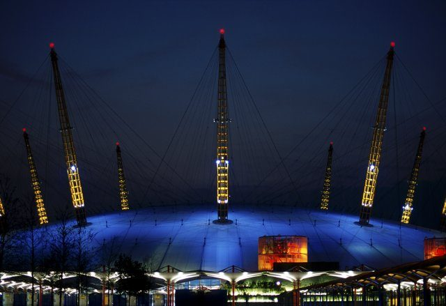
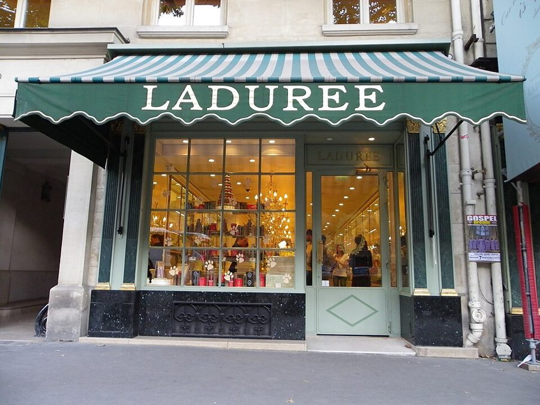
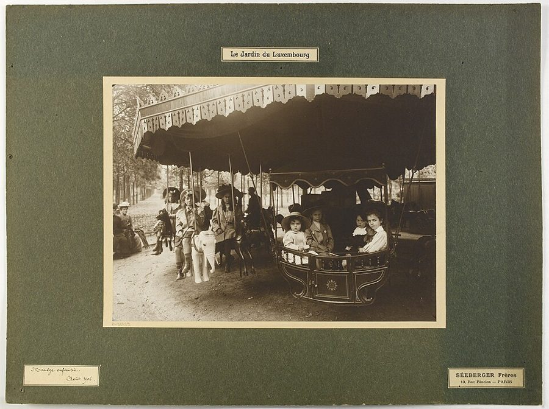

这一篇在做什么
全书最后一篇，写 1999 年圣诞到 2000 年 2 月，一家人离开巴黎前的最后几个月。前一半名义上写千禧年：作者先拿巴黎、伦敦、纽约的跨年比了一番，接下来写的多半是家里的事，流感、圣诞采购、一场暴风、孩子的睡觉时间，埃菲尔铁塔的灯光在其中亮了两次。后一半写准备回纽约，停在卢森堡公园的旋转木马上。读的时候抓两条线：千年一遇的公共时间，和一个孩子过日子的时间；留意两条线在哪里碰到一起。

埃菲尔铁塔闪灯的时候，2008 年 11 月。那年秋天塔身打的是蓝光，平时是金黄色；白色亮点是闪光灯（2000 年新年第一次亮，2003 年换过一套），塔顶的光束是探照灯。§1 写的就是这两样东西。Rudi Riet，CC BY-SA 2.0，维基共享资源 读之前：这篇的来历
这一篇写在一家人回纽约之前：§2 说他们 12 月和 1 月两次回纽约找房子，2 月回到巴黎，再出门散步已经是「最后几次」。它是全书第 23 篇，也是最后一篇，属于第四部分「描绘世界的机器」。前一篇（第 22 篇）写丽兹酒店的游泳池，女儿 Olivia 在那一篇里出生，结尾已经在收拾行李。这时 Luke 五岁多，在巴黎上学。第 1 篇说过，一家人原打算「待到千禧年」，趁 Luke 还没到回纽约上小学的年纪。这一篇写的就是这个约定到期的时候。
千年一次的大日子，和一个孩子寻常的一天，哪一个更算数？要离开巴黎了，作者觉得这五年在儿子身上留下了什么？
读的时候带着这几个问题。不用先找答案，读完回来对照「检查一下理解」。
作者说巴黎「赢了」千禧年。他是认真在比，还是在开玩笑？从哪些字眼看得出来？§1
除夕夜作者没去现场看铁塔，一周后却在桥上撞见它又亮了一次。这两次看铁塔，有什么不一样？§1
第 4 篇圣诞日记里，作者想象不出 Luke 有一天能玩旋转木马上的套圈。到了这一篇，最后 Luke 说「我是在想啊」，没去够最后一个圈。你怎么读这个结尾？§2
这一篇的路线
这一篇只有两节，走法和前面几篇不太一样。§1 名义上写千禧年，大事只占开头和中间几段：三座城市比跨年、圣诞夜的暴风、电视上的烟火；其余都是家里的小事。除夕那一段，作者自己把这两条线点了出来：公共的、历史的时间，和孩子睡觉的时间。两条线在协和桥上碰头：Luke 看着闪灯的铁塔说了一句话，作者由此想开去。§2 只剩小的那条线，几乎不发议论，靠一个场面收尾。读译本时如果觉得 §1 末尾突然跳到一本讲进化的书，那是作者在借别人的争论给铁塔下判断。
公共的时间
孩子的时间
§1
§2
三城比跨年
全家流感
圣诞夜暴风
孩子得睡觉
电视上的烟火
协和桥上 两条线碰头
牛顿和铁塔
回纽约
复印店
旋转木马 最后一个圈
本站示意图。蓝点是公共的时间，橙点是家里和孩子的时间，中间的点是两条线碰头的地方；折线是阅读顺序，虚线是原书的分隔。 作者落在哪： §1 末尾，作者说铁塔和香槟这些老掉牙的巴黎符号并没有死：在某种意义上，它们和 Luke 一样年轻，会作为他自己童年的一部分跟着他。§2 不再下判断，停在旋转木马上：孩子说自己「是在想」，没去够最后一个圈。
分节地图
原书这一篇有一处分隔，分成两节。每一节的粗体是读译本时认得出的场面；下面的斜体是英文这一节开头的几个词，打开电子书搜它就能跳到那里。读完一节打个勾。
流感、圣诞夜的暴风、铁塔的千禧烟火约 2000 词 Paris won the century, against all … 大事和家事交替。除夕那段作者自己点出两种时间；结尾从铁塔转到一本书里的争论。 回纽约找房子，复印店，卢森堡公园的旋转木马约 800 词 We went to New York first … 准备离开。前几段是零碎的告别，后一半整场是套圈，留意最后几句对话。
背景：作者默认你知道的事
按在书里出现的顺序排，标题前是节号。
§1 伦敦的大轮子和大穹顶，纽约的千年虫跨入 2000 年的那一夜，各大城市比着庆祝。伦敦为千禧年造了两样东西：泰晤士河南岸的「伦敦眼」（London Eye）摩天轮，和格林尼治的千禧穹顶（Millennium Dome），就是书里说的「巨轮」和「巨穹」。千年虫（Y2K）指老电脑程序只用两位数记年份，到 2000 年可能算错，当时很多人担心停电、银行和交通系统出乱子。书里那对纽约朋友躲着时代广场、赶在「雷劈下来」之前回家，作者是在笑这种末日气氛。作者去伦敦坐的是欧洲之星（Eurostar），那时伦敦的终点是滑铁卢站（Waterloo）。

千禧穹顶，2000 年夏天，千禧展览还在办的时候。Stuart Vickers，CC BY-SA 2.0，维基共享资源
冯·施特罗海姆 Erich von Stroheim 奥地利出生的导演和演员，默片时代在好莱坞拍过《贪婪》（Greed），后来演过雷诺阿的《大幻影》。§1 说作者少年时和表亲 Philippe 在巴黎外围的几个区到处找他的影展。
多米尼克·桑达 Dominique Sanda 法国女演员，1970 年演过贝托鲁奇的《同流者》。第 1 篇说少年 Philippe 迷她；如今 Philippe 搬去伦敦开鱼餐馆，这一点第 1 篇也提过。
§1 圣诞前夜的几家店和协和广场Au Nain Bleu（蓝色小矮人）是巴黎的老牌玩具店；Bonpoint 是童装店，第 21 篇 Olivia 出生时穿的就是这家的衣服；Ladurée 是王家路（rue Royale）上的老茶点店，第 19 篇圣诞日记里一家人也在这里排队，圣诞的树桩蛋糕也从这里买。王家路一头通向协和广场（place de la Concorde），那是巴黎最大的广场，中间立着埃及方尖碑。作者拿马奈（Édouard Manet）比冬日黄昏的广场：马奈是 19 世纪的画家，以画得出层次丰富的黑和灰出名。§1 后面 Luke 骑车绕的胸像是夏多布里昂（Chateaubriand），19 世纪上半叶的作家，晚年住在巴克街（rue du Bac）。

王家路 16 号的 Ladurée，2013 年。§1 说圣诞前夜队排到店外，订过货的人被叫出队，从路边的送货车上取蛋糕。Erwmat，CC BY-SA 3.0，维基共享资源 §1 1999 年圣诞的暴风1999 年 12 月 26 日清晨，暴风「洛塔尔」（Lothar）横扫法国北部，巴黎蒙苏里（Montsouris）气象站测到每小时 169 公里的阵风，和书里「一百多英里」（160 公里以上）对得上；隔一天又来了一场「马丁」（Martin），扫过法国西南部。凡尔赛宫的公园损失很重：据宫方说，园里二十万棵树中有一万多棵被吹断或连根拔起，各家统计的数字出入很大。书里说凡尔赛「可能要一个世纪才能恢复」，见下面「后来」。
凡尔赛公园里的「玛丽-安托瓦内特的橡树」，2012 年只剩这截树干。原图说明说它种于 1681 年，是园里最老的树，毁于暴风。Jean-Pierre Dalbéra，CC BY 2.0，维基共享资源
§1 埃菲尔铁塔的千禧灯光铁塔是 1889 年为巴黎世界博览会造的，动工时不少艺术家联名反对，后来成了巴黎的标志。为迎接 2000 年，塔上加了两样东西：两万只闪光灯，开灯时满塔随机闪烁，1999 年 12 月 31 日夜里第一次亮；塔顶一盏旋转的探照灯，夜里扫过全城。§1 两次写铁塔，一次是除夕在电视上看烟火加闪灯，一次是一周后在协和桥上撞见闪灯又亮。书里说那天是普通的星期三傍晚，为什么亮，作者自己也不知道。
§1 美好年代、世纪末，和一本讲进化的书belle époque（美好年代）一般指 1870 年代到 1914 年一战爆发之间的巴黎，香槟、歌舞厅、海报、铁塔都是这个年代的符号；fin de siècle（世纪末）说的是 19 世纪末那种又精致又颓靡的气氛。作者站在 20 世纪末，眼前还是这些「老东西」。他接着想起一本讲进化和意识的书里的争论：牛顿 1687 年的《自然哲学的数学原理》（Principia）和埃菲尔铁塔，哪个更值得珍视。书里没说是哪本书，本站也没有查到。
§2 仙那度和约翰逊博士Xanadu（仙那度）出自英国诗人柯勒律治（Coleridge）的诗《忽必烈汗》，诗里忽必烈在上都（Xanadu）建了一座逍遥宫，英文借它指梦想中的富丽去处。作者拿它说 Martha 终于见到的那家复印店，第 22 篇写过她在巴黎找不到像样的复印店。约翰逊博士（Samuel Johnson）是 18 世纪的英国文人，编过一部《英语词典》；鲍斯韦尔（James Boswell）写的《约翰逊传》里，他开口闭口称人「Sir」。作者说他常叫儿子 sir，就是学这个腔调。
§2 卢森堡公园的旋转木马和套圈卢森堡公园（Jardin du Luxembourg）在第六区，是书里一家人常去的公园。园里有一座没有音乐的老旋转木马，骑外圈木马的大孩子每人拿一根木棍，转到操作员身边时，去挑他吊着的小铁环。这个游戏书里写过好几次：第 4 篇圣诞日记里，一岁多的 Luke 只能坐在小车里，盯着拿棍子的大孩子看；第 8 篇作者读到约瑟夫·罗特（Joseph Roth）1925 年的游记，那时挑得最多的有奖，如今没有奖了，那一年 Luke 骑上了木马，还得用绳子拴着；第 14 篇他还不敢拿棍子，只是使劲盯着看。这一篇是最后一次。

卢森堡公园里的儿童旋转木马，1906 年 8 月。不一定是书里那一座，但可以看出这里的孩子坐旋转木马由来已久。Séeberger Frères，CC0，维基共享资源 词与短语
只收中文译文多半传不出原味的地方：熟词生义、反话和挖苦、典故、夹在英文里的法文。读译本读到觉得别扭、不知道作者在说什么时，来这里找那一节的；斜体小字是原句里的几个英文词，在电子书里搜它就能找到原文。
§1 流感、圣诞夜的暴风、铁塔的千禧烟火
won the party
… At least we won the party …
至少派对是我们赢了
前一句说巴黎「赢了这个世纪」，口气像体育比赛；二十世纪常被叫作「美国世纪」，这话本身就是玩笑。这一句马上退一步：赢的只是跨年派对。we 指巴黎人，作者已经把自己算成巴黎这一边了。
Y2K alert
… hunkering down in Y2K alert …
千年虫警戒
hunker down 是蹲下、躲起来等风头过去。那对朋友躲在乡下防千年虫，作者笑他们过分紧张（见「背景」）。
cheesed off
… feel vaguely ashamed, cheesed off …
窝火
英式俚语，和奶酪无关。作者讲伦敦时顺手用了一个英国人的说法。
country cousinish
… even sort of country cousinish …
像个进城的乡下亲戚
country cousin 是来大城市走亲戚、处处露怯的乡下人。巴黎人到了伦敦，反倒觉得自己土了。
right in the kisser
… hit our family right in the kisser …
迎面一拳，正中要害
kisser 是俚语的「嘴、脸」，不是接吻的人。拳击式的说法，形容流感来得又快又狠。
a 103 fever
… with a 103 fever, shaking alongside …
烧到 39 度多
美国用华氏，103 度约合摄氏 39.4 度。原文没写单位，美国读者自然懂。
bûche de Noël
… Ladurée for our bûche de Noël …
（法文）圣诞树桩蛋糕
字面是「圣诞木柴」，做成一截树干模样的卷蛋糕，法国人过圣诞必吃。
flannel pants painted by Manet
… of flannel pants painted by Manet …
马奈画的一条法兰绒裤子
灰法兰绒是西裤的经典料子，马奈擅长画层次细腻的灰（见「背景」）。作者把黄昏的协和广场比成一条名画里的灰裤子，大和小、庄重和家常放在一起。
socked it to
… following the viruses, socked it to Paris …
狠狠揍了一顿
sock 作动词是用拳头打，sock it to someone 是美式口语的「狠狠教训」。和上面的 in the kisser 是一路的拳击比喻：病毒刚打完，风又来了。
pen streaks behind Superman’s cape
… like the pen streaks behind Superman’s cape
超人披风后面那几道速度线
漫画里画在飞行人物身后表示速度的线条。风大到好像看得见，像漫画里画出来的一样。
like tumbleweeds
… sent them blowing like tumbleweeds down …
像风滚草一样滚
风滚草是美国西部片里滚过荒凉小镇的干草团。作者把它搬到圣日耳曼大道上，滚的是一街圣诞树。
Saint Silvestre
… or Saint Silvestre, as the French …
（法文）除夕
12 月 31 日是圣西尔维斯特的纪念日，法国人常用这个名字叫新年前夜。法文通常拼作 Saint-Sylvestre，书里拼成 Silvestre。
poussette
… the baby sleeping in her poussette …
（法文）婴儿推车
书里一直用这个法文词。第 1 篇作者说过，推着它能从一个小门洞直接进到法兰西学会的院子里。
no big London-type deal
… every Christmas, no big London-type deal
不像伦敦那样大张旗鼓
no big deal（没什么大不了）中间塞进 London-type，顺手挖苦伦敦的千禧排场。
in the forties
… the temperature somewhere in the forties …
（华氏）四十几度
不是四十多摄氏度，是华氏 40 到 49 度，约合摄氏 4 到 9 度：巴黎冬天湿冷的寻常天气。
Arbor Day in Kalamazoo
… different from Arbor Day in Kalamazoo …
小城里的植树节
Arbor Day 是美国的植树节，一个没人当回事的小节日；Kalamazoo 是密歇根州的小城，名字古怪，美国人拿它代指「无名小地方」。合起来说：千年一次的巴黎之夜，在有两个孩子的家里，和小镇的平常日子差不多。
bedtime stalls
… and bedtime stalls and bedtime nursing …
睡前磨蹭
stall 作动词是拖延。孩子为了晚睡想出的各种花样；nursing 是喂奶（给 Olivia）。四个 bedtime 连着排，故意啰嗦，像家长那一晚的流水账。
a bit of a dud
… actually a bit of a dud …
有点泄气
dud 原指哑弹，引申为不灵的东西、令人失望的事。前面还有限定：是「从电视上看」，加上几个英国朋友的电话。
damp squibs
… long lines and damp squibs and …
哑炮
英式说法，squib 是小爆竹，受潮了点不响，引申为「虎头蛇尾的事」。放在跨年夜，可以照字面读成真不响的烟火，也可以读成落空的期待。
meanly
We felt meanly, smugly glad.
小心眼地
mean 在这里是小气、刻薄，不是「意思」也不是「平均」。作者自己承认，幸灾乐祸不太体面。
carbonated
… as though it had been carbonated …
像充了气、冒着泡
碳酸饮料就是 carbonated drink。后面接着说「注了苏打水的气泡」。这个比方为后面 Luke 那句「像香槟」铺了路。
like a responsible reporter
… firsthand, like a responsible reporter …
像个尽责的记者那样
自嘲：记者本该去现场，他在家看电视。紧接着的 hey, come to think of it, it was after midnight 也是自嘲：千禧时刻偏偏就是午夜，而午夜是孩子早该睡、大人也想睡的时候。
kicking myself
I was still kicking myself for missing …
懊悔得直跺脚
kick oneself 是「后悔死了」，不是真踢自己。
crème de marrons
… a crepe crème de marrons …
（法文）栗子酱
甜的栗子泥，抹在可丽饼上。第 5 篇也出现过。
raising hell
… shooting off and raising hell …
闹翻了天
raise hell 是大吵大闹、胡闹，这里说满塔灯闪得热闹，带着口语的痛快劲。
haut fonctionnaire
… an haut fonctionnaire in the mayor’s office …
（法文）高级官员
法国的高级公务员。下一句作者把这种可能概括成「大楼里的某位官员」。
just for the hell of it
… again, just for the hell of it
纯粹好玩
没有理由，就是想这么干。和前面的 raising hell 都用了 hell，意思却各不相同。
culture or civilization
… culture or civilization, one or the other …
不是「文化」就是「文明」
这两个词在书里有作者自己的意思：第 20 篇说，他所谓文化是大建筑、官方的那一套，文明是小店、日常的那一套。这里正对着前一句的两种可能：大楼里的官员，或者塔底下好玩的小人物。
nixed
… that Martha had nixed for our tree …
否决了
nix 是美式口语，说不行。第 4 篇圣诞日记写过这件事：作者买回会闪的彩灯，Martha 嫌俗气，他只好跑回去换成不闪的。
scoring a simile
… pleasure at scoring a simile …
打出了一个比方
score 是比赛里得分。孩子说出一个漂亮的比方，像进了一个球一样得意。
belle époque, fin de siècle
… same old belle époque, fin de siècle …
（法文）美好年代、世纪末
两个法文词都指一百年前的巴黎（见「背景」）。fin de siècle 字面就是「世纪末」，作者此刻恰好又站在一个世纪末，所以说「老一套」。
Schnewton
… eventually have been discovered by Schnewton …
随便哪个「牛不顿」
英语里有一种从意第绪语来的说法，把词头换成 schm- 重复一遍，表示不屑（fancy-shmancy）。这里拼成 Schnewton，意思是：没有牛顿，也会有别的谁发现同样的定律。
romantic engineering
… minor piece of romantic engineering …
浪漫主义的工程
带引号，是那本书的原话：铁塔「终归只是一件浪漫主义的小工程」。可它偏偏只能在那时那地、由那个人造出来，这正是争论押宝在铁塔身上的理由。
§2 回纽约找房子，复印店，卢森堡公园的旋转木马
an unbeautiful existence
… a full life and an unbeautiful existence
不美的日子
Martha 的话是交叉对仗：巴黎是美的日子、不完整的人生，纽约是完整的人生、不美的日子。existence 偏指日子过成什么样子，life 偏指人生的内容。
It was his German.
… with school. It was his German.
法语成了他的「德语」
本站的理解：在说英语的人心目中，法语常带着浪漫的联想，德语带着严厉、规矩、学校的联想。对作者夫妇，法语是浪漫的；对在巴黎上学的 Luke，法语倒成了板着脸的那门语言。
mirthless laugh
… believe is called a mirthless laugh …
干笑、冷笑
小说里的老套写法。what I believe is called（我相信这就叫）是作者在拿这个套话开玩笑：五岁孩子发出了一声小说反派的冷笑。
even with
… even with French administration at last
和法国的学校体制扯平了
get even with 是报复、算总账，句子把 got 省了。even 不是「甚至」。Luke 扮宙斯，用雷电劈法国老师，算是报了仇。
Xanadu
… It was her Xanadu, right there …
她梦里的天堂
出自柯勒律治的诗（见「背景」）。一家复印店被抬到忽必烈逍遥宫的高度，大词小用；而且偏偏在要走的时候才找到。
nursing discreetly
… with Olivia, nursing discreetly.
悄悄地喂奶
nurse 在这里是哺乳，不是护理。括号里接着是 Martha 说的在巴黎当众喂奶为什么难。
loaded
… really meaningful and loaded.
意味太重
loaded 不是「装满」也不是「有钱」，是话或动作带着很重的弦外之音。Martha 说，在巴黎露出乳房不是因为人们拘谨，反而是因为这个动作含义太多。
beat-up and beautiful
… the beat-up and beautiful old horses
又破又美
两个 b 开头的词押头韵。第 4 篇圣诞日记写同一座旋转木马，也说它破旧却是个美人。
picking them like cherries
… two more rings, picking them like cherries
摘樱桃似的
一个接一个，轻巧得像摘樱桃。整段用短句、逗号和 bang, bang，节奏跟着木马越转越快。
sober pleasure
… watching with sober pleasure, not seeing …
不动声色的高兴
sober 不是「没喝酒」，是克制、不张扬。和作者自己那份「太美国、太好胜」的得意形成对照。
Johnsonianly
I call him sir a lot, Johnsonianly
约翰逊博士式地
拿人名造副词。约翰逊博士开口闭口称人 Sir（见「背景」）。父亲管五岁儿子叫「先生」，是一种亲昵的玩笑。
you’re unconscious
… a lot, Johnsonianly—“you’re unconscious …
你神了，手感来了
美式体育俚语，夸球员状态好到不用想就百发百中，字面却是「你失去知觉了」。结尾就从这个词生出来：Luke 只听懂了字面。
What means unconscious?
… “What means unconscious?” I heard him …
「unconscious」是什么意思？
标准英语应是 What does … mean?，Luke 的说法像是从法文 Que veut dire … 的语序搬过来的：一个在法语里上学的美国孩子。
so dearly won
… the rings, so dearly won, to …
来得那么不容易
dearly 在这里是「代价高昂地」，不是「亲爱地」。孩子费尽力气挑下的环，转眼被抖下来交给下一个孩子。
后来
这一篇停在 2000 年初，一家人回纽约之前。下面接着讲书里的几样东西后来怎样。每条都写了核对日期，这类内容过一两年就会变。
铁塔的闪灯留了下来
两万只闪光灯本是为迎接 2000 年装的，一直闪到 2002 年，那年 7 月因设备磨损停下；2003 年换上一套新灯，从此每晚天黑后的每个整点闪一次，起初每次 10 分钟，2008 年起改为 5 分钟。书里作者在一个普通的星期三傍晚撞见它又闪，觉得莫名其妙；如今在巴黎住上一晚就能看到。核对于 2026-10。依据：埃菲尔铁塔官网「灯光」页，欧洲一台（Europe 1）、Lightzoom Lumière 的报道。
凡尔赛的树补了二十年
据凡尔赛宫官网，暴风过后的 2000 年发起国际募捐，筹到 200 万欧元，加上国家拨的 1900 万欧元，园里前后补种了约五万棵树。据欧洲一台的报道，凡尔赛的首席园丁 Alain Baraton 认为，到 2019 年补种一批橡树之后，那场暴风的最后一道伤疤才算抹平。比书里担心的「一个世纪」快，但也用了二十年。核对于 2026-10。依据：凡尔赛宫官网「1999 年暴风」页，欧洲一台的报道。
伦敦的轮子和穹顶
伦敦眼 1999 年 12 月 31 日由首相布莱尔主持启用，当晚空转、不载客：一个座舱的离合器有毛病，32 个座舱的离合器全部换过，2000 年 2 月 1 日才开始载客，3 月 9 日对公众售票。千禧穹顶办了一年展览，来客只有预期的一半左右，后来改成演出场馆。核对于 2026-10。依据：维基百科「London Eye」条，IOL 2000 年 2 月 1 日的报道，大英百科全书「Millennium Dome」条。
值得停下来的句子
Millennial time is public time, history time; children’s bedtimes are experience time, the real clock that ticks in life.— §1，除夕夜带孩子回家睡觉那一段的结尾。本站译：千禧的时间是公共的时间、历史的时间；孩子的就寝时间才是经历的时间，是生活里真正在走的那只钟。
分号两边对称：前半句给千禧时间两个同位语（public time, history time），一层加一层；后半句也是两层（experience time, the real clock）。英文里 time 出现四次，连 bedtime 里也藏着一个 time，就寝时间和千禧时间被放在同一个词上比，中文「就寝时间」「千禧时刻」很难有这种同根的效果。experience 和 history 这一对，第 1 篇也用过：作者在那里说，经历是拼命追着历史大火车的手摇车。
not as part of the lost glory of the French past but as part of what happened to him when he was a kid.— §1，协和桥上看铁塔那一段。本站译：不是当作法国往昔失落的荣光，而是当作他小时候碰上的一件事。
not as … but as … 的对照。前半句是大词：lost glory、French past，一听就是历史书的腔调；后半句几乎全是最平常的单音节词，what happened to him when he was a kid，像孩子自己会说的话。两半句词汇的落差就是作者的意思：同一座铁塔，可以是大历史的符号，也可以是一个孩子的童年记忆。中文译得出意思，后半句那种轻和口语化很难留住。
检查一下理解
先在心里答，再点开。答错的那题，回书里把对应那一节再读一遍。
1.（§1）作者说巴黎「赢了」千禧年。伦敦输在哪里？他的这个判断有多认真？ 伦敦造了巨轮巨穹，声势最大，那一夜在电视上看却像个哑炮：排长队、烟火不响、摩天轮不转；巴黎的轮子小，但转得欢，铁塔的烟火很美。作者承认这是从电视和朋友电话里得来的印象，还说自己幸灾乐祸得有点小心眼：是半开玩笑的比赛。
2.（§1）除夕夜作者为什么没去现场看铁塔？这件小事和全篇有什么关系？ 孩子睡了，而且已经过了午夜。他前面刚说过，千禧时间是公共的，孩子的就寝时间才是生活里真正走的钟。他只能看电视，窗开着，一只耳朵听着几条街外的真爆响。
3.（§1）铁塔在一个普通的星期三傍晚又闪起来，作者想到哪两种可能？ 要么是市政府里哪位高官按某个精确的日程开的，要么是塔底下开电梯的或看门的随手一拨，纯粹好玩。照第 20 篇的分法，前者算「文化」（大建筑、官方），后者算「文明」（小人物、日常）。他说两种都可能，单看是看不出来的。
4.（§1）Luke 说铁塔「像香槟」，作者由此想到了什么？ 他先嫌铁塔加香槟是世纪末的老一套，转念一想：它就在眼前，Luke 正在巴黎度过童年，在这个意义上铁塔和他一样年轻，会作为童年的一部分跟他一辈子。接着他想起一本书里的争论：物理定律没有牛顿别人也会发现，铁塔却只能由埃菲尔在那时那地造出来。
5.（§2）作者说法语成了 Luke 的「德语」，是什么意思？ 对作者夫妇，法语代表浪漫和异国情调；对在巴黎上学的 Luke，法语代表老师、规矩和学校。他在家扮宙斯，学法国老师的腔调，再一道雷劈下去，算是和法国的学校扯平了。
6.（§2）作者看儿子连挑几个环，为什么高兴之后又有点内疚？ 他觉得这份得意太美国、太好胜；长椅上的法国父亲只是安静地看，没人把旋转木马当比赛。但他还是忍不住喊了出来。
7.（§2）作者喊「you’re unconscious」是什么意思？Luke 怎么回答？ 这是夸人状态神勇、不用想就做得完美的体育俚语。Luke 不懂，作者解释说，就是你不用想就做得很好。Luke 带点担心地说「我是在想啊」，然后没去够最后一个环，木马就停了。
用一句话说这一篇，写给一个没读过的人。
精彩回顾
读过又忘了，从这里想起来。挑的是这一篇最值得记住的场面和说法，不按原书顺序；每条后面是节号，想细看就回书里那一节。全书各篇的这一节都收在全书回顾 。
一句话： 千禧年和离开巴黎都是大事，作者却把它们落在孩子身上：铁塔对 Luke 来说和他一样年轻，最后一圈旋转木马，他没去够最后一个环。
「像香槟」 一周后在协和桥上，铁塔的闪灯又亮了。Luke 说它像香槟，为自己打出一个比方得意；作者高兴的是，这个比方这么法国。
§1 千禧夜也得按时睡 千年一次的除夕，有两个孩子的人家照样要哄睡、讲故事、喂奶。作者说，孩子的就寝时间才是生活里真正走的钟。
§1 圣诞树满街滚 圣诞夜的暴风把街边的圣诞树吹得像风滚草，沿圣日耳曼大道一路滚，有一棵还插着电，亮着灯在地上扭。
§1 伦敦的哑炮 伦敦造了巨轮巨穹，电视上看却排长队、烟火不响、轮子不转。巴黎的轮子小，转得欢。作者承认自己幸灾乐祸。
§1 「我是在想啊」 Luke 在旋转木马上一个接一个挑环，作者喊他「神了，不用想」。Luke 有点担心地说自己是在想，然后放过了最后一个环。
§2